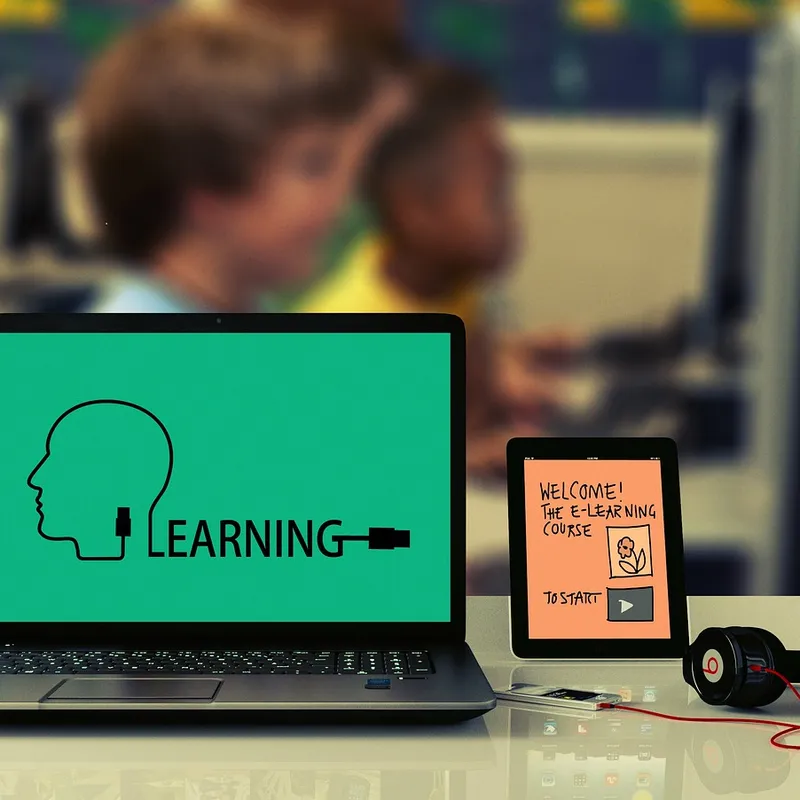

कोर्स › ACS डिजिटल मित्र: बुनियादी कौशल में प्रमाणपत्र › खंड-7: ग्राहक-सेवा व सरकारी portal
पाठ 7.11: online course में दाख़िला: ख़ुद सीखते रहना

📚 सब पाठ: किसी भी पाठ पर सीधे जाओ
इस पाठ के बाद तुम कर पाओगे: (1) अच्छा online course चार-सवाल कसौटी से परखना, (2) course-बेचू जाल पहचानना, (3) ग्राहक और ख़ुद — दोनों के लिए सीखते-रहने की आदत बनाना, (4) असली दाख़िला ख़ुद करके देखना।
यह पाठ दो लोगों के लिए है — ग्राहक और तुम ख़ुद
counter पर यह सवाल बढ़ता जा रहा है: "बेटी को online course करवाना है — कौन-सा? कैसे?" पर इस पाठ का दूसरा निशाना तुम ख़ुद हो। डिजिटल मित्र का हुनर दूध नहीं, नदी है — ठहरा तो सड़ा: apps बदलती हैं, portal बदलते हैं, ठगों के जाल बदलते हैं (इसी खंड में कितने देखे)। जो मित्र सीखना बंद करता है, वह दो साल में पुराना हो जाता है; जो रोज़ थोड़ा सीखता रहता है, उसका counter हर साल नया रहता है। इसलिए आज की कसौटियाँ ग्राहक को समझाने और अपने लिए बरतने — दोनों काम की हैं। और इस पाठ का अभ्यास (NIOS-59) इस कोर्स का सबसे असली अभ्यास है: mock नहीं — ACS के मुफ़्त कोर्स में अपना सच्चा दाख़िला (acslearn.com), क्योंकि दाख़िला सिखाने का सबसे ईमानदार तरीक़ा वह है जहाँ सीखना मुफ़्त हो और ग़लती की क़ीमत शून्य।
अच्छे course की चार-सवाल कसौटी
काल्पनिक उदाहरण — मीना के पास रीता (7.03 वाली) लौटी: "silai के आगे का हुनर सीखना है, phone पर कोई course बता।" मीना की कसौटी — किसी भी course पर चार सवाल: (1) सिखाने वाला कौन? — नामी संस्था/सरकारी मंच/जाना-परखा platform, या बेनाम "guru" जिसका पता तक नहीं? सरकार के अपने मुफ़्त-सस्ते सीखने-मंच भी हैं (कौशल-पोर्टल, open-पाठ्यक्रम मंच) — पहले वहाँ झाँको। (2) अंदर क्या है? — पाठ-सूची (syllabus) खुली दिखती है या "दाख़िले के बाद पता चलेगा"? छिपी सूची = छिपा सौदा। (3) दाम का सच? — मुफ़्त है तो किस हद तक (course मुफ़्त, certificate का अलग दाम — यह बेईमानी नहीं, बस पहले लिखा होना चाहिए); paid है तो रक़म-वापसी नियम लिखा है? (7.05 की आदत: सच वही जो पन्ने पर)। (4) certificate की हैसियत? — कौन जारी करता है, कहाँ मान्य है, verify कैसे होता है? "सरकारी-मान्य" का दावा हो तो किस आधार पर — लिखा दिखे, ज़बानी नहीं। चारों जवाब पन्ने पर मिलें, तो course भरोसे-लायक़; दो से ज़्यादा धुंधले, तो आगे बढ़ जाओ — विकल्पों की कमी नहीं है।
course-बेचू जाल — "नौकरी-पक्की" वाली बोली
course-बाज़ार का सबसे चालू जाल पहचान लो: बिन-माँगे call/संदेश — "course करो, नौकरी पक्की — placement guarantee", "सिर्फ़ आज के लिए आधा दाम", "seat बस दो बची हैं", और क़िस्त (EMI/loan) पर मोटी फीस लिखवाने की जल्दी। कसौटी से काटो: नौकरी की "guarantee" कोई course नहीं दे सकता — नौकरी हुनर+बाज़ार से मिलती है (7.05 का मंज़ूरी-वादा निषेध, course-पोशाक में); "आज ही" वाली घड़ी 6.02 का डर/लालच-जाल है — असली course कल भी मिलता है; और loan लिखवाकर course बेचने वाले से दुगनी दूरी — course छूटे न छूटे, क़िस्त नहीं छूटती। ग्राहक को एक-पंक्ति ढाल दो: "जो course ख़ुद चलकर बिकने आया है, उसे चार-सवाल कसौटी पर दुगना कसो।"
दाख़िले की विधि और सीखते-रहने की आदत
दाख़िले की विधि में नया कुछ नहीं — इसी खंड के औज़ार: आधिकारिक site ख़ुद टाइप (7.05) · खाता सीखने वाले के अपने नाम-email से (7.08) · form में हिज्जे-मिलान (7.04) — certificate पर वही नाम छपेगा · भुगतान हो तो 7.09 की पूरी विधि · रसीद-enrollment संख्या register में (7.02)। असली चुनौती दाख़िले के बाद शुरू होती है: online course की सबसे आम क़िस्मत है "पहले दिन जोश, पाँचवें दिन ख़ामोश।" इलाज वही जो इस कोर्स में तुम ख़ुद बरत रहे हो: रोज़ का छोटा-तय समय (आधा घंटा भी बहुत है), हफ़्ते का एक हिसाब-क्षण ("कितने पाठ हुए?"), और सीखा हुआ उसी हफ़्ते किसी काम/किसी आदमी पर आज़माना — ज्ञान जो चला नहीं, वह जमा नहीं। रीता को course बताकर मीना का काम आधा हुआ; पूरा तब, जब अगले हफ़्ते follow-up में पूछा — "पहला पाठ हुआ?" (7.02 का सातवाँ खाना, सेवा का सबसे ऊँचा रूप।)
एक नज़र में — कसौटी, जाल, आदत
करके देखो (अभी — यही NIOS-59 है)
acslearn.com खोलो (ख़ुद टाइप करके) और ACS के किसी मुफ़्त कोर्स में अपना दाख़िला ख़ुद लो — खाता अपने नाम-email से, हर screen पढ़कर। फिर आज ही उसका पहला पाठ पूरा करो और register/copy में लिखो: "अगला पाठ — (तारीख़)"। दाख़िला सीखने का और सीखते-रहने का — दोनों अभ्यास एक साथ।
छोटा टेस्ट: 5 प्रश्न
हर प्रश्न में सही विकल्प छूकर जवाब दो। सही होने पर हरा, ग़लत पर लाल दिखेगा। बिना छुए जाँचना हो तो "उत्तर देखो" खोलो।
प्र-1. इस पाठ का "दूसरा निशाना" मित्र ख़ुद क्यों है?
उत्तर देखो
उत्तर: (ख)। सीखते-रहना मित्र के धंधे की साँस है — ठहरा हुनर सड़ता है। बाक़ी क्यों ग़लत: (क) कमीशन-धंधा 7.05 के दलाल-फ़र्क़ से कटता है; (ग) दीवार नहीं, काम चलना चाहिए; (घ) समझाना ही तो सेवा है — पर ख़ुद सीखना उसकी जड़।
प्र-2. चार-सवाल कसौटी में "अंदर क्या है?" का पैमाना?
उत्तर देखो
उत्तर: (ग)। जो दिखाने लायक़ है वह दाख़िले से पहले दिखता है — "बाद में पता चलेगा" भरोसे का उल्टा है। बाक़ी क्यों ग़लत: (क) लंबाई गुण नहीं; (ख/घ) रौब-रंग बिकने की पोशाक है, पढ़ाई की नहीं।
प्र-3. "course करो, placement guarantee — नौकरी पक्की" की सही पढ़त?
उत्तर देखो
उत्तर: (घ)। मंज़ूरी-वादा निषेध (7.05) का course-रूप — guarantee बिकती है, निभती नहीं; साथ में loan-क़िस्त का फंदा अलग। बाक़ी क्यों ग़लत: (क/ख) रक़म से झूठ सच नहीं होता; (ग) काग़ज़ पर लिखा झूठ भी वसूलना मुक़दमों का जंगल है।
प्र-4. "course मुफ़्त, certificate का अलग दाम" — इसकी सही पढ़त?
उत्तर देखो
उत्तर: (क)। दाम का सच पहले लिखा हो तो वह सौदा है, छिपा हो तो जाल — कसौटी "कितना" नहीं, "कब बताया" है। बाक़ी क्यों ग़लत: (ख) खुला लिखा मॉडल ठगी नहीं; (ग) सरकारी-भरोसेमंद मुफ़्त मंच हैं; (घ) certificate की ज़रूरत काम-दर-काम — "मूर्खता" कहना भी ग़लत छोर।
प्र-5. दाख़िले के बाद "पाँचवें दिन ख़ामोश" रोग का इलाज?
उत्तर देखो
उत्तर: (घ)। ज्ञान जो चला नहीं, जमा नहीं — आदत की तीन कीलें ही course पूरा कराती हैं। बाक़ी क्यों ग़लत: (क/ख) बिखराव रोग है, इलाज नहीं; (ग) एक दिन का रट्टा पाँचवें दिन की ख़ामोशी का ही दूसरा रूप है।
अगला पाठ → 7.12: certificate upload व portal के काम।
वीडियो (Video)
इस पाठ का जाँचा-परखा वीडियो जल्द यहीं जुड़ेगा। तब तक दो जीवित रास्ते:
🎬 YouTube पर इस पाठ के वीडियो खोजें
(दोनों नई खिड़की में; वीडियो बिना भी पाठ पूरा। पढ़ाई कहीं नहीं रुकती।)